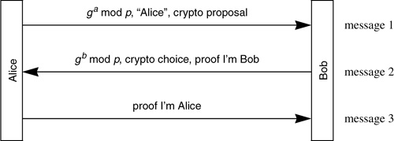
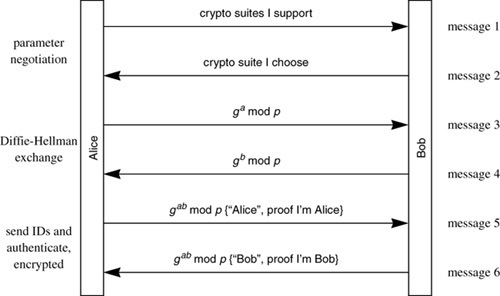
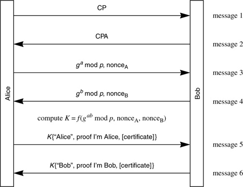
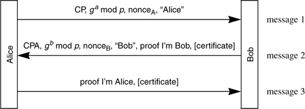
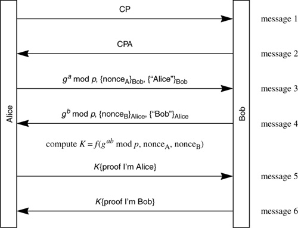
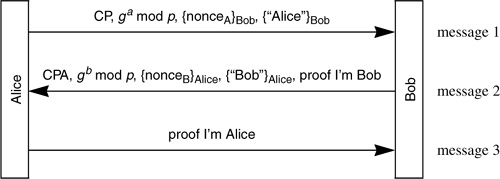
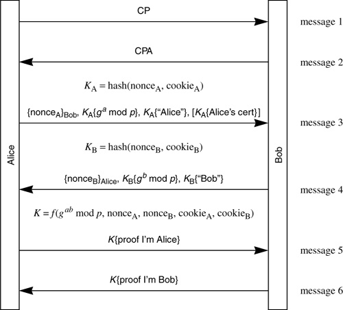
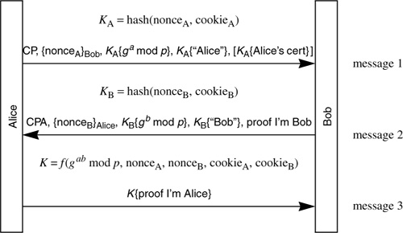
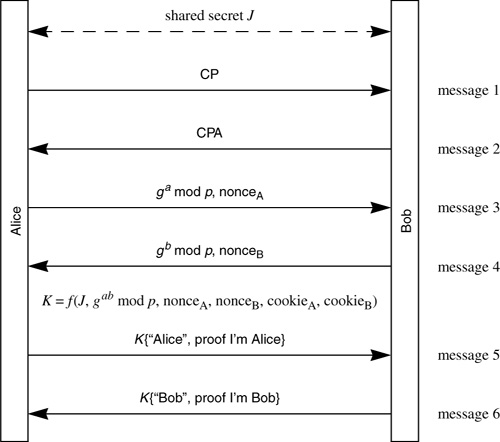
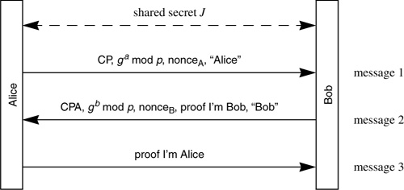

Networking Security Networking Security Networking Security Security Networking Security Networking Security Networking Charlie Kaufman Radia Perlman Mike Speciner Prentice Hall Network Security: Private Communication in a Public World, Second Edition Networking Security Networking Security Networking Security Security Networking Security Networking Security Networking Charlie Kaufman Radia Perlman Mike Speciner Prentice Hall Network Security: Private Communication in a Public World, Second Edition
18.5. Phase 1 IKE
18.5.1. Aggressive Mode and Main Mode
There are two types of phase-1 exchanges, called modes. Aggressive mode accomplishes mutual authentication and session key establishment in three messages. Main mode uses six messages, and has additional functionality, such as the ability to hide endpoint identifiers from eavesdroppers and additional flexibility in negotiating cryptographic algorithms.
In main mode there are six messages. In the first pair of messages, Alice sends a cookie and requested cryptographic algorithms, and Bob responds with his cookie and the cryptographic algorithms he will agree to. Messages 3 and 4 are a Diffie-Hellman exchange. Messages 5 and 6 are encrypted with the Diffie-Hellman value agreed upon in messages 3 and 4. In messages 5 and 6, each side reveals its identity and proves it knows the relevant secret (e.g., private signature key, or pre-shared secret key).
In aggressive mode (Protocol 18-2), there are only three messages. The first two messages include a Diffie-Hellman exchange to establish a session key, and in the second and third messages each side proves they know both the Diffie-Hellman value and their secret.

In main mode (Protocol 18-3), Alice starts by giving all the cryptographic algorithms she supports, in order of preference, and Bob responds by making a choice. In aggressive mode, Alice can also propose cryptographic algorithms, but since she has to send a Diffie-Hellman number she has to specify a unique flavor of Diffie-Hellman (e.g. g and p) and hope Bob supports it. Otherwise, Bob will refuse the connection, and not even tell her what he would have supported.

Note that there is no way for Bob to cryptographically protect a message complaining about Alice's cryptographic choices, since Alice and Bob haven't established a session key yet, so Alice can't be sure a refusal message is coming from Bob. Although the specification doesn't say what Alice should do if Alice's aggressive mode message is refused, Alice should attempt to reconnect with main mode, rather than retry aggressive mode with a weaker cryptographic choice (see Homework Problem 1).
18.5.2. Key Types
There are three types of keys upon which a phase 1 IKE exchange might be based: pre-shared secret key, public encryption key (a public key pair whose usage is restricted to encryption and decryption), or public signature key (a public key pair whose usage is restricted to signing and signature verification). The originally specified protocols based on public encryption keys were replaced with more efficient protocols. The original public key encryption variants separately encrypted each field with the other side's public key, instead of using the well-known technique of encrypting a randomly chosen secret key with the other side's public key and encrypting all the rest of the fields with that secret key. Apparently a sufficiently long time elapsed before anyone noticed this that they felt they needed to keep the old-style protocol in the specification for backward compatibility with implementations that might have been deployed during this time.
This means there are 8 variants of the Phase 1 of IKE! That is because there are 4 authentication methods (original public key encryption, revised public key encryption, public key signature, and pre-shared secret key encryption), and for each authentication method, a main mode protocol and an aggressive mode protocol.
What are the arguments for supporting all these authentication methods? Variants based on pre-shared secrets might make sense because secret keys are higher performance and might be easier to configure. But why do we need three variants of public key authentication? Well, the original public key encryption method is only there for backward compatibility. But why have both public key encryption and public key signature methods?
There are several reasons for the signature-key variant:
Each side definitely starts out knowing its own signature key, but may not know the other side's encryption key until the other side sends a certificate, and that would require an extra message. If Alice's encryption key was escrowed, and her signature key was not, then using the signature key offers more assurance that you're talking to Alice rather than the escrow agent. In some scenarios people would not be allowed to have encryption keys, but it is very unlikely that anyone who would have an encryption key would not also have a signature key.
The IKE specification gives two properties that it claims the public key encryption variants have that the public key signature variants do not provide. One is plausible deniability that the conversation took place, since someone with knowledge of both public keys could construct a complete conversation (Homework Problem 3). The other is that the way the protocol is designed you'd have to break both Diffie-Hellman and RSA in order to break the protocol.
Both arguments are the kind of far-fetched properties that only a theorist could get excited about. In practice neither of them matters, certainly not enough to cause the world to implement twice as many protocols and force the user to make a choice of which exotic cryptographic properties she wants for a particular conversation. But the first argument (plausible deniability that Alice talked to Bob) isn't even true. With IKE's signature variant, Alice signs a hash before she even knows who she's talking to, so the record of her IKE session can't be used to prove she had a conversation with Bob. All it can possibly prove is that she tried to use the public signature key variant of IKE to talk to somebody.
As for the argument about needing to break both Diffie-Hellman and RSA, this is an extremely implausible advantage, especially when applied to a real-time communication standard (as opposed to a standard for encrypted stored data).
Another point in favor of the signature key variant is that the public key encryption variants are operationally unusable in many situations, since they require Alice to know Bob's public key before she begins the exchange.
There is one interesting property one might gain from using public key encryption rather than public key signatures. With public key signatures or pre-shared keys, one side has to reveal its identity to the other first. If it's the responder that reveals his identity first, then anyone can initiate an IPsec connection to Bob's IP address to find out who is there. If it's the initiator that reveals her identity first, then an active attacker might be impersonating Bob's IP address to see who might be connecting. But with public key encryption, it is possible to have both sides reveal their identity only to whom they intend to authenticate themselves, by encrypting their identity and any other identifying information (such as their certificate) with the other side's public key. But this can only be done if at least one side already knows the public encryption key of the other side.
One can come up with arguments for all the key types, but is it worth specifying, implementing, and presumably asking users to decide between all these variants? I1 once explained to me2 how to make my2 house less cluttered. Pick up each item, one at a time, and ask my2self, "Would I2 pay $1.00 for this if I2 saw it at a garage sale?" This is the question the world needs to ask, for each of the variants.
18.5.3. Proof of Identity
The proof of identity (transmitted in messages 2 and 3 of aggressive mode, and 5 and 6 of main mode), proves the sender knows the key associated with the identity (the pre-shared secret key, the private encryption key, or the private signature key), and it also serves as integrity protection on the previous messages. In IKE the proof of identity is different for each key type, and each consists of some hash of the key associated with the identity, the Diffie-Hellman values, the nonces, the cryptographic choices Alice offered, and the cookies. It would have been much more straightforward to just use a hash of the previous messages in their entirety, and as it turns out, at least one of the fields left out of IKE's hash (vendor ID payload, and Bob's accepted cipher suite) could possibly be exploited by an attacker. This was pointed out by Tero Kivinen and is something that will be most likely be fixed in a later version of IKE.
One example of a field that should have been protected is the cryptographic suite Bob chooses. Theoretically, if one of the choices Alice is willing to accept is so weak that it can be broken in real time, then a man-in-the-middle, Trudy, could replace Bob's choice of a good crypto suite with that weak suite. Then, before Alice times out the connection, Trudy could break the cryptography and impersonate Bob for the remainder of the session. This is admittedly far-fetched, but given that a more straightforward protocol is more secure, there's really no excuse.
Leaving fields such as the private use fields out of the integrity check might be more of an issue. By definition, we have no idea what they might be used for and whether Trudy can cause some problem by modifying them.
18.5.4. Cookie Issues
Photuris had the ability for Bob to remain stateless until he knew that the initiator was able to return his cookie. Like Photuris, IKE has Alice and Bob each transmit a cookie in messages 1 and 2. However, amidst all the complexity and over-engineering of the cryptographic functions, apparently nobody noticed until too late that IKE no longer had the ability for Bob to remain stateless. For instance, he has to remember the set of cryptographic proposals Alice requests in message 1 because they are included in the hashes used in the proof of identity. If Alice were to repeat the necessary information from message 1 in message 3, Bob could be stateless until receipt of message 3.
With stateless cookies, Bob would send the same cookie to the same IP address for some time (until Bob changes his secret), because Bob needs to be able to reconstruct, from the IP address alone, what cookie value he would have sent. ISAKMP requires the cookies to be unique for each connection, so even if IKE took our suggestion from the previous paragraph and had Alice repeat the information from message 1 in message 3, the ISAKMP specification would forbid Bob from choosing stateless cookies.
Another problem with the design of the ISAKMP/IKE cookies is duplicate connection identifiers. The IKE exchange is identified by the pair of cookies <initiator cookie, responder cookie>. There is nothing to prevent Alice from being the initiator in one exchange and the responder in another and having the same cookie pair established. If the order in which events happens is that Alice initiates a connection, choosing X as the initiator cookie, and then someone initiates a connection to Alice, and chooses X, to which Alice chooses Y for the responder cookie, then if the responder in the exchange that Alice initiated also happened to choose Y there would be two connections with the same connection identifier, and no way for Alice to have prevented it. This is unlikely to happen (unless attackers are observing Alice's packets and doing it on purpose) since cookies are large (8 octets) and ISAKMP requires they be randomly chosen. But the randomness requirement which is needed to prevent duplicate connection identifiers is another reason why Bob can't choose cookies designed for stateless operation.
A more straightforward design, which also eliminates this flaw, would be to have each side choose an SPI for identifying traffic going towards it, as is done in ESP and AH.
18.5.5. Negotiating Cryptographic Parameters
IKE allows the two sides to negotiate which encryption, hash, authentication method, and Diffie-Hellman parameters they will use. Alice proposes acceptable suites of algorithms and Bob chooses. Bob does not get to choose 1 from column A, 1 from column B, 1 from column C, and 1 from column D, so to speak. Instead Alice transmits a set of complete proposals. While this is more powerful in the sense that it can express the case where Alice can only support certain combinations of algorithms, it greatly expands the encoding in the common case where Alice is capable of using some of the algorithms in any combination. For instance, if Alice can support 3 of each of 4 types of algorithm, and would be happy with any combination, she'd have to specify 81 (34) suite choices to Bob in order to tell Bob all the combinations she can support! Each choice must specify each of encryption, hash, authentication, and Diffie-Hellman group.
A much simpler scheme is to predefine a few suites, and only allow a choice of one of the suites. This is what is done in SSL/TLS.
But if the flexibility is really desired for independently mixing-and-matching cryptographic algorithms, it would be better if IKE had allowed Alice to make a set of proposals, where each set is independent, but within a set there are allowed to be choices. For instance, proposal 1 might be to use any of three algorithms for encryption, either of 2 algorithms for hash, a specific authentication method, and any of 6 Diffie-Hellman groups. Proposal 2 might be to use any of some other (possibly overlapping) set of encryption algorithms, any of a set of hash algorithms, etc.
But back to IKE as specified. In the first message of phase 1 IKE, Alice makes a set of proposals for cryptographic algorithms, and Bob chooses. Main mode vs. aggressive mode is not negotiated. Alice just decides which to do, and specifies which she chose. If she chose aggressive mode, then all proposed suites have to have the same Diffie-Hellman group, and it has to be the one that she uses in message 1. Examples of algorithms to be negotiated are:
encryption algorithm (e.g., DES, 3DES, IDEA) hash algorithm (e.g., MD5, SHA) authentication method (e.g., pre-shared keys, RSA public key signature, DSS, RSA public key encryption with the old protocol, RSA public key encryption with the new improved protocol) Diffie-Hellman group (e.g., modular exponentiation with a particular g and p, elliptic curve with a particular set of parameters)
In all of the main mode exchanges, all cryptographic algorithms can be negotiated (encryption algorithm, hash algorithm, authentication method, Diffie-Hellman group). Alice makes a proposal and Bob chooses. IKE specifies at least one algorithm of each category as MUST implement. The MUST-implements in IKE are encryption method=DES, hash=MD5 and hash=SHA, authentication method=pre-shared key, Diffie-Hellman group=modular exponentiation with a canned g and p).
Optionally within a choice Alice can specify a lifetime beyond which the SA should not be used. IKE suggests that, when the lifetime is close to being exceeded, the SA should be closed and, if needed, a new SA established. The lifetime is specified as a quantity of data and/or a duration, and is considered exceeded when either limit is exceeded. If only one type of lifetime (duration or data quantity) is specified, the default for the other is assumed (duration=8 hours, data quantity=infinite).
In aggressive mode, there is no way to negotiate the group for the Diffie-Hellman exchange since Alice has already chosen one and included the Diffie-Hellman value in the message. However, the Diffie-Hellman choice still has to appear in the menu and is necessary information to Bob so that he can interpret what kind of Diffie-Hellman value Alice has sent to him.
Although none of the aggressive mode variants allow negotiation of the Diffie-Hellman group, some of the other cryptographic algorithms can be negotiated. The only ones that cannot be negotiated are those that Alice has to use in message 1. For instance, in both public key encryption variants, Alice may send a hash of Bob's certificate (allowing Bob to identify which of his keys is needed to decrypt the information Alice is sending him), so Alice must choose the hash algorithm. And in the aggressive mode using the revised public key encryption algorithm, Alice additionally uses secret key encryption, so she must choose the secret key encryption algorithm. She's not allowed to propose anything different once she's used something.
18.5.6. Session Keys
IKE Phase 1 establishes 2 session keys: an integrity key and an encryption key for the purpose of integrity-protecting and encrypting the last of the phase 1 IKE messages and all phase 2 IKE messages. The keys are hashes of the Diffie-Hellman values used in the exchange, the nonces, the cookies, and in the case of a pre-shared secret, that secret. It also creates a keying material seed to be used to mix into the information in the phase 2 exchanges to create unique keys for the phase 2 SAs. It's a little surprising that IKE doesn't establish 4 session keys (integrity and encryption for each direction), since cryptographers generally recommend using different keys in the two directions to avoid reflection attacks. And indeed IKE is vulnerable to reflection attacks, though most likely the reflection attacks can only cause denial of service, e.g., closing SAs.
IKE uses the term "prf" (for "pseudo random function") for the kind of function you'd use as an integrity check that takes two arguments, a key and the data, and outputs a hash. Examples of such a function are DES CBC residue (see §4.3 Generating MACs), or HMAC (see §5.7 HMAC). When there are several items that are essentially hashed together, in order to fit the form factor for a prf function, the items are concatenated together in order to make it look like exactly two inputs to the prf function.
IKE needs to calculate various types of keys (integrity, encryption for the IKE SA, and keys for IPsec SAs established with phase 2). First IKE hashes the information from the IKE exchange (e.g., the nonces, the cookies, the Diffie-Hellman values) to get a quantity mysteriously known as SKEYID. It is a bad name because it isn't an ID of anything. A better name would be something like KEYSEED. Equally baffling, SKEYID is produced by hashing together different information depending on which key type was used. This was mostly due to taking the functions from the SKEME paper, which had different protocols, and sometimes had reasons for not being able to use the same SKEYID (such as to allow SKEYID to be computed before the Diffie-Hellman shared value). But these reasons, for the most part, were no longer valid for the IKE protocols. IKE could therefore have been much simpler. For readability, we'll leave out "mod p" and assume the reader assumes exponentiation, such as gxy is intended to mean mod p. IKE defines SKEYID as:
in the case of signature public keys, prf(nonces, gxy) in the case encryption public keys, prf(hash(nonces), cookies) in the case of pre-shared secret key, prf(pre-shared secret key, nonces)
The double hash in the case of encryption public keys probably looks strange to you. Again, there was no reason for it, nor was there any reason why the cookies had to be there, other than copying it from the SKEME paper (where they weren't necessary either).
Next, the IKE paper defines what it calls SKEYID_d, which is the secret bits used to create the other keys. It is defined as prf(SKEYID, (gxy, cookies, 0)). (Remember, IKE wants the hash to take two arguments so the last three arguments are considered to be concatenated to form one argument.)
The integrity protection key is called SKEYID_a, (where "a" is for "authentication"). SKEYID_a is defined as prf(SKEYID, (SKEYID_d, (gxy, cookies, 1)).
The encryption key is called SKEYID_e, and is defined as prf(SKEYID, (SKEYID_a, gxy, cookies, 2)).
The proof of identity for Alice is prf(SKEYID, (gx, gy, cookies, Alice's initial crypto-parameters proposal, Alice's identity)).
The proof of identity for Bob is prf(SKEYID, (gy, gx, cookies, Alice's initial crypto-parameters proposal, Bob's identity)).
18.5.7. Message IDs
IKE messages contain a 32-bit "message ID" which ISAKMP specifies should be randomly chosen. The IKE message ID serves the purpose that would be served with sequence numbers in most protocols, and does it less well, since in order to recognize a replay, you would have to remember all message IDs you've ever seen. With a sequence number, it's much easier to recognize messages you've seen already. For instance, if your window size is one and the last one you processed had message n, then anything other than n+1 will be rejected as a replay or out of window. Given that the header is the same in both directions (initiator cookie, responder cookie), and the session keys are the same in both directions, not only can an attacker replay messages to the same recipient, but the attacker can also reflect messages back to the sender. The reflection problem could have been solved by using different keys in the different directions, or by reversing the order of the cookies, so that the recipient's cookie value appears first in the message (thus treating it like IPsec's SPIs). And using sequence numbers for the message IDs is simpler and solves the replay problem.
18.5.8. Phase 2/Quick Mode
Once an IKE SA is set up between Alice and Bob, either Alice or Bob can initiate an IPsec SA through the phase 2 "quick mode" exchange (i.e., the initiator of a phase 2 SA does not have to be the same party that initiated the phase 1 SA). The quick mode exchange establishes an ESP and/or AH SA, which involves negotiating crypto parameters, optionally doing a Diffie-Hellman exchange (if perfect forward secrecy is desired), and negotiating what traffic will be sent on the SA.
18.5.9. Traffic Selectors
IPsec allows each side of a phase 2 SA to restrict the traffic sent on that SA, by IP address, protocol type (the field in the IP header that indicates UDP, TCP, etc.), and/or TCP/UDP port. This is done by having the phase 2 initiator give a proposal for what IPsec calls a "traffic selector", which is an IP address or (address, mask) pair, a port or all ports allowed, a protocol or all protocols allowed. The other side can either accept it exactly as specified, or refuse.
Note that there is an asymmetry here. If the initiator of a phase 2 SA requests a larger set of addresses than the other side is configured to want, the connection will be refused, with no hint as to what traffic selector would have been acceptable. But if the other side (the one with the more restrictive configuration) initiated the SA, then it would work.
Why does IKE include this feature of specifying the type of traffic that will go over the SA? Perhaps a firewall is configured to only allow certain types of traffic, in which case telling the other side your policy might detect misconfiguration and give some clue as to why traffic is not getting through. In the case where people would want many different SAs between the same pair of nodes, so that traffic from different flows are not multiplexed over a single SA, it is necessary for the two sides to agree on what traffic each SA should be used for.
18.5.10. The IKE Phase 1 Protocols
We now describe all 8 Phase 1 IKE protocols. In the first message, Alice transmits her "cookie" value. After that, all messages start with the cookie pair (initiator cookie, responder cookie), and that pair serves as the IKE connection identifier. Note that in an IKE exchange between Alice and Bob, all messages start with the same cookie pair, in the same order. If Alice initiated the IKE connection, her cookie value always appears in the "initiator cookie" field. To reduce clutter, we won't write "(initiator cookie, responder cookie)" in the figures for the messages.
Fields that are optional are indicated with square brackets ("[" and "]"). When the message is encrypted is it indicated by being enclosed in curly brackets. "{}". To reduce clutter, CP indicates crypto proposal, and CPA indicates crypto proposal accepted.
18.5.10.1. Public Signature Keys, Main Mode
In this mode, the two parties have public keys capable of doing signatures. Both endpoint identifiers are hidden from an eavesdropper, but an active attacker can figure out the initiator's identity.
The reason for including nonces in messages 3 and 4 is so that Alice and/or Bob can save themselves computation by using the same Diffie-Hellman private value for many exchanges. If they always use the same value, then there will not be perfect forward secrecy, so it's a good idea to change it periodically. Mysteriously (and for no good reason), in the public signature key variants, K is also a function of the cookies.
If Bob instead appended the information from message 6 onto message 4 then the exchange would complete in 5 messages instead of 6. However, there is a disadvantage of doing that, since Alice and Bob can't be computing the Diffie-Hellman key in parallel. (See §16.8 Arranging for Parallel Computation and Homework Problem 4.)
The proof of identity consists of a signature on the hash of all the information discussed in §18.5.3 Proof of Identity.

18.5.10.2. Public Signature Keys, Aggressive Mode

Note that messages 2 and 3 are not encrypted, even though the same information is encrypted in the main mode public signature key variant. The identities could have been encrypted and have the exchange still be 3 messages (see Homework Problem 5).
18.5.10.3. Public Encryption Key, Main Mode, Original

IKE specifies 4 different phase-1 protocols for public encryption keys, because the original protocols (main mode and aggressive mode) were inefficient (separately encrypted multiple fields with public keys, requiring multiple private key operations). It's astonishing that they left the original protocols in the spec once they redesigned them.
A problem with this variant is that in message 3 there are two fields separately encrypted with Bob's public key, so he needs to do two private key operations to decrypt it. Likewise Alice needs to do two private key operations to decrypt message 4.
Another problem would occur if a nonce or a name were larger than the public key with which it is being encrypted. The spec could have defined some sort of CBC mode for encrypting something larger than a key, but it didn't. Note that with X.500 names it would not be far-fetched for a name to be very long.
Alice and Bob prove they know their private keys because they are able to decrypt the nonce from the other side. They prove this both by knowing K and the hashes used in the proofs in messages 5 and 6, since they are all functions of (among other things) the nonces.
As we discussed in §18.5.2 Key Types, there's no way for either Alice or Bob to ask the other side to send them their certificate! If you don't already know the other side's public key, you can't use this protocol. And if neither side knows the other side's public key without their certificate, there is no way, even if Alice and Bob could request certificates in messages 1 and 2, for them to send their certificates without divulging their identity.
There is an option of having Alice send, in message 3, a hash of Bob's certificate. The reasoning is that Bob might have multiple public keys, that Alice would know that he had multiple public keys, and that he wouldn't have lots of certificates so a hash of the certificate Alice happens to have for Bob's key would be recognized by Bob.
18.5.10.4. Public Encryption Key, Aggressive Mode, Original

This protocol is almost the same as the main mode version except that messages 1 and 2 are removed (and crypto suites other than Diffie-Hellman group are negotiated in parallel with the other information in messages 1 and 2) and Bob provides his proof in message 2 rather than, as in main mode, doing it after Alice presents her proof. The proof consists of a hash of the nonce presented by the other side (which requires knowledge of the private key to decrypt), along with the Diffie-Hellman values and the cookie values.
18.5.10.5. Public Encryption Key, Main Mode, Revised
The public encryption protocol was revised to require only a single private key operation on each side (rather than two in the original). This is done by encrypting with a secret key which is a function of the nonce, and the nonce is encrypted with the other side's public key. Thus the other side uses its private key to retrieve the nonce, but then decrypts the other fields with a secret key.
The revised protocol allows Alice to optionally send Bob her certificate. It still has the problem that Alice needs to know Bob's public key.

18.5.10.6. Public Encryption Key, Aggressive Mode, Revised
18.5.10.7. Shared Secret Key, Main Mode
This is the one required protocol. And it is the most broken. One situation in which this protocol might be useful is in the "road warrior" case, where an employee's laptop is configured with a shared secret with the company's firewall. This would allow the employee to authenticate to the firewall and establish an encrypted tunnel. But the way this mode is designed requires the identities to be the IP addresses. This makes it useless in the road warrior case, because a road warrior's IP address is dependent on where she is that day. And if the identity has to be the IP address, why go to all the work of hiding it by using the 6-message main mode protocol?
The problem with this protocol is that Alice sends her identity in message 5 encrypted with a key K which is a function of the shared secret J. Bob can't decrypt message 5 in order to find out who he's talking to unless he knows J, which means he needs to know who he's talking to. The working group noticed this, and rather than fixing the protocol (which wouldn't have been hard), they instead said that in this mode Alice's identity has to be her IP address! This makes it almost useless in practice, and it certainly doesn't hide identities.

This protocol can be fixed to allow arbitrary identities by not making K a function of J. J is included in the hash which is the proof of identity, so it's not needed in the encryption key.
Perhaps one could claim that there is an advantage of having K be a function of J, since it hides both identities from active attackers. But if Bob doesn't know in advance who will be connecting, or at least have a very small set of candidates, then you're stuck with using the IP address as the identity, which as we said, makes it almost useless, and certainly doesn't hide identities from anyone. And if Bob does know in advance who will be connecting, then there's no reason for Alice to send her identity at all. And certainly Alice knows who she's talking to, since she knows what J to use. So Bob doesn't need to tell Alice his identity, either.
18.5.10.8. Shared Secret Key, Aggressive Mode
This protocol doesn't have the problem that the main mode shared secret protocol has, because the identities are not sent encrypted.


|